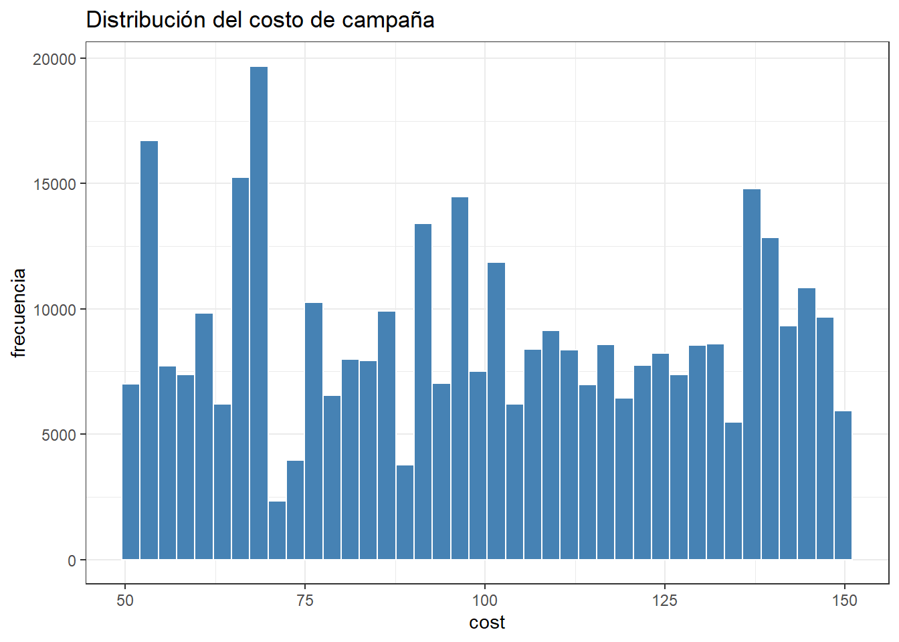
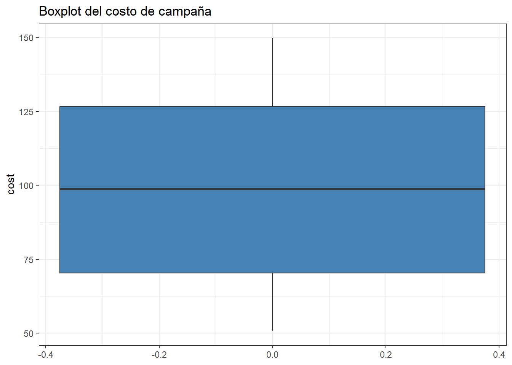
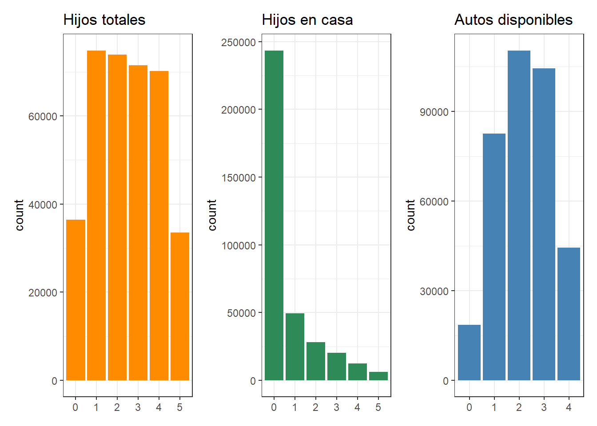
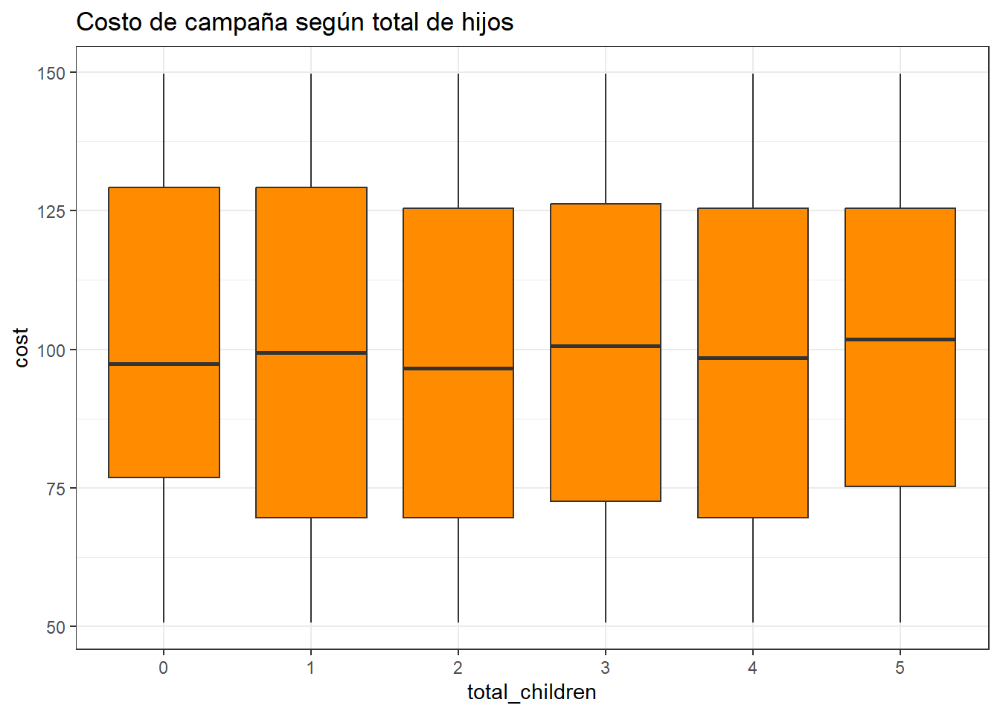
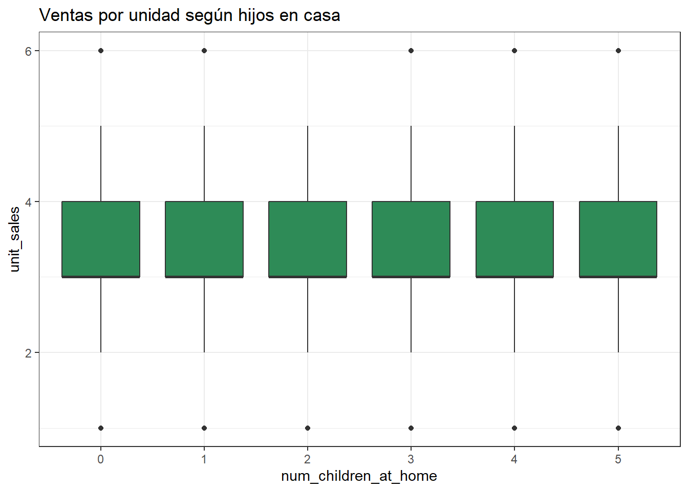
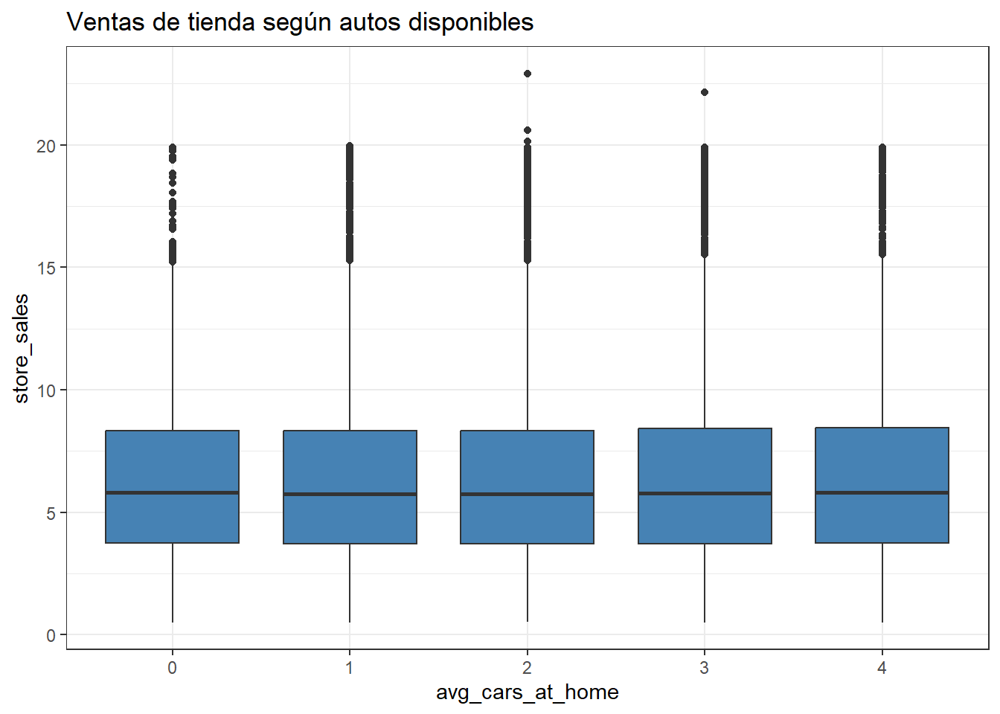
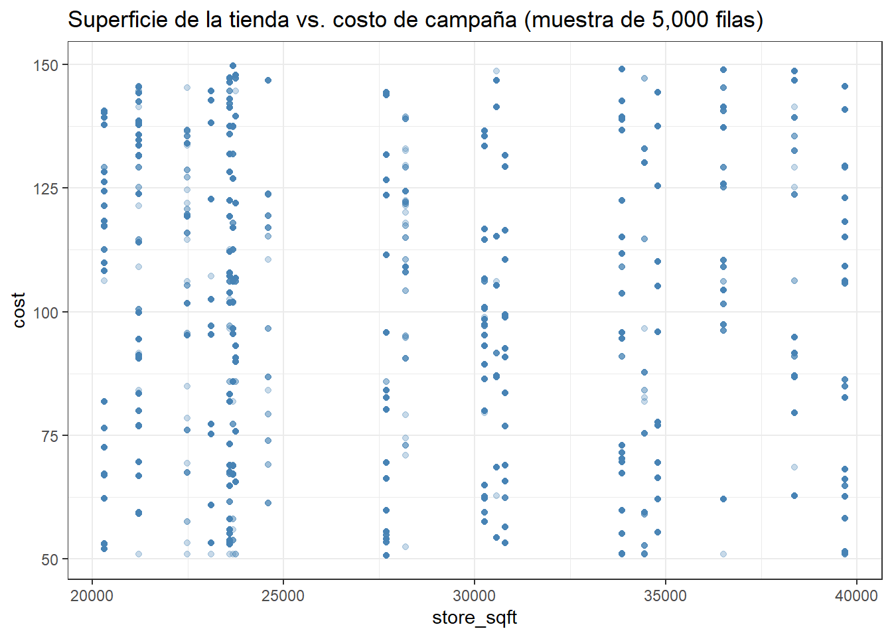

Capitulo 1 Análisis exploratorio de datos (EDA)
Este capítulo desarrolla el análisis exploratorio de datos (EDA) sobre el dataset de campañas de mercadeo en tiendas. El objetivo del EDA es entender la forma, calidad y relaciones de las variables antes de pasar a las pruebas de hipótesis y al modelo de predicción: si hay datos faltantes, cómo se distribuyen cost, unit_sales y store_sales, y cómo se relacionan estas con el perfil del hogar (total_children, num_children_at_home, avg_cars_at home(approx).1).
1.1 Preparación de los datos
1.1.2 Cargar los datos
Usamos read_csv() (en vez de read.csv()) para que los nombres de columna con espacios y paréntesis, como avg_cars_at home(approx).1, se conserven tal cual y podamos referirnos a ellos con comillas invertidas.
1.1.3 Primer vistazo a los datos
Muéstrame las 5 primeras filas
head(data, n = 5) %>%
kbl(caption = "Primeras 5 filas del dataset") %>%
kable_styling(bootstrap_options = c("striped", "hover", "condensed"),
full_width = TRUE, font_size = 12)| id | store_sales(in millions) | unit_sales(in millions) | total_children | num_children_at_home | avg_cars_at home(approx).1 | gross_weight | recyclable_package | low_fat | units_per_case | store_sqft | coffee_bar | video_store | salad_bar | prepared_food | florist | cost |
|---|---|---|---|---|---|---|---|---|---|---|---|---|---|---|---|---|
| 0 | 8.61 | 3 | 2 | 2 | 2 | 10.30 | 1 | 0 | 32 | 36509 | 0 | 0 | 0 | 0 | 0 | 62.09 |
| 1 | 5.00 | 2 | 4 | 0 | 3 | 6.66 | 1 | 0 | 1 | 28206 | 1 | 0 | 0 | 0 | 0 | 121.80 |
| 2 | 14.08 | 4 | 0 | 0 | 3 | 21.30 | 1 | 0 | 26 | 21215 | 1 | 0 | 0 | 0 | 0 | 83.51 |
| 3 | 4.02 | 3 | 5 | 0 | 0 | 14.80 | 0 | 1 | 36 | 21215 | 1 | 0 | 0 | 0 | 0 | 66.78 |
| 4 | 2.13 | 3 | 5 | 0 | 3 | 17.00 | 1 | 1 | 20 | 27694 | 1 | 1 | 1 | 1 | 1 | 111.51 |
La estructura de los datos
## spc_tbl_ [360,336 × 17] (S3: spec_tbl_df/tbl_df/tbl/data.frame)
## $ id : num [1:360336] 0 1 2 3 4 5 6 7 8 9 ...
## $ store_sales(in millions) : num [1:360336] 8.61 5 14.08 4.02 2.13 ...
## $ unit_sales(in millions) : num [1:360336] 3 2 4 3 3 4 2 3 3 4 ...
## $ total_children : num [1:360336] 2 4 0 5 5 5 1 2 5 1 ...
## $ num_children_at_home : num [1:360336] 2 0 0 0 0 5 0 0 0 0 ...
## $ avg_cars_at home(approx).1: num [1:360336] 2 3 3 0 3 3 2 2 2 3 ...
## $ gross_weight : num [1:360336] 10.3 6.66 21.3 14.8 17 7.26 9.58 16.9 13.8 15.7 ...
## $ recyclable_package : num [1:360336] 1 1 1 0 1 0 0 1 1 1 ...
## $ low_fat : num [1:360336] 0 0 0 1 1 1 0 0 0 1 ...
## $ units_per_case : num [1:360336] 32 1 26 36 20 5 6 2 6 9 ...
## $ store_sqft : num [1:360336] 36509 28206 21215 21215 27694 ...
## $ coffee_bar : num [1:360336] 0 1 1 1 1 1 1 1 0 1 ...
## $ video_store : num [1:360336] 0 0 0 0 1 0 1 1 0 1 ...
## $ salad_bar : num [1:360336] 0 0 0 0 1 1 1 1 0 1 ...
## $ prepared_food : num [1:360336] 0 0 0 0 1 1 1 1 0 1 ...
## $ florist : num [1:360336] 0 0 0 0 1 1 1 1 0 1 ...
## $ cost : num [1:360336] 62.1 121.8 83.5 66.8 111.5 ...
## - attr(*, "spec")=
## .. cols(
## .. id = col_double(),
## .. `store_sales(in millions)` = col_double(),
## .. `unit_sales(in millions)` = col_double(),
## .. total_children = col_double(),
## .. num_children_at_home = col_double(),
## .. `avg_cars_at home(approx).1` = col_double(),
## .. gross_weight = col_double(),
## .. recyclable_package = col_double(),
## .. low_fat = col_double(),
## .. units_per_case = col_double(),
## .. store_sqft = col_double(),
## .. coffee_bar = col_double(),
## .. video_store = col_double(),
## .. salad_bar = col_double(),
## .. prepared_food = col_double(),
## .. florist = col_double(),
## .. cost = col_double()
## .. )
## - attr(*, "problems")=<externalptr>El dataset contiene 360.336 observaciones y 17 variables, todas leídas por R como tipo num. Sin embargo, esto no refleja la naturaleza real de cada una (ver la operacionalización de variables en la introducción): store_sales, unit_sales, gross_weight, store_sqft, cost y units_per_case sí corresponden a variables continuas; id, total_children, num_children_at_home y avg_cars_at home(approx).1 son numéricas discretas (conteos); mientras que recyclable_package, low_fat, coffee_bar, video_store, salad_bar, prepared_food y florist son en realidad variables binarias (0/1) que deben tratarse como factor antes de emplearse en análisis categóricos.
1.1.4 Datos faltantes
Veamos si hay datos faltantes. En lugar de un resumen ancho de una sola fila (donde es difícil notar si alguna columna sí tiene NA), se organiza el conteo en una tabla vertical, una fila por variable, resaltando en rojo cualquier conteo mayor a 0.
faltantes <- data %>%
summarise(across(everything(), ~sum(is.na(.)))) %>%
pivot_longer(cols = everything(), names_to = "Variable", values_to = "NA_count") %>%
mutate(NA_pct = round(100 * NA_count / nrow(data), 2))
faltantes %>%
kbl(col.names = c("Variable", "Valores faltantes (NA)", "% del total"),
caption = "Conteo de datos faltantes por variable") %>%
kable_styling(bootstrap_options = c("striped", "hover", "condensed"),
full_width = TRUE, font_size = 12) %>%
column_spec(2, color = ifelse(faltantes$NA_count > 0, "red", "black"),
bold = ifelse(faltantes$NA_count > 0, TRUE, FALSE))| Variable | Valores faltantes (NA) | % del total |
|---|---|---|
| id | 0 | 0 |
| store_sales(in millions) | 0 | 0 |
| unit_sales(in millions) | 0 | 0 |
| total_children | 0 | 0 |
| num_children_at_home | 0 | 0 |
| avg_cars_at home(approx).1 | 0 | 0 |
| gross_weight | 0 | 0 |
| recyclable_package | 0 | 0 |
| low_fat | 0 | 0 |
| units_per_case | 0 | 0 |
| store_sqft | 0 | 0 |
| coffee_bar | 0 | 0 |
| video_store | 0 | 0 |
| salad_bar | 0 | 0 |
| prepared_food | 0 | 0 |
| florist | 0 | 0 |
| cost | 0 | 0 |
Al revisar las 17 columnas del dataset en esta tabla, ninguna fila muestra un valor distinto de 0 en la columna de NA: las 360.336 observaciones están completas en todas las variables, por lo que no se requiere ningún proceso de imputación antes de continuar con el análisis.
1.2 Análisis univariado de la variable de costo (cost)
La variable cost es el costo de la campaña de mercadeo asociado a cada combinación tienda-producto-hogar, y es la variable respuesta de este proyecto: todo el análisis posterior (pruebas de hipótesis y modelo de regresión) busca explicarla y predecirla.
1.2.1 Estadísticos descriptivos
Realicemos el resumen estadístico de la variable
resumen_cost <- data %>% summarise(n = length(cost),
media = round(mean(cost), 2),
sd = round(sd(cost), 2),
mediana = round(median(cost), 2),
RIC = round(IQR(cost), 2),
Q1 = round(quantile(cost, 0.25), 2),
Q3 = round(quantile(cost, 0.75), 2),
minimo = round(min(cost), 2),
maximo = round(max(cost), 2),
asimetria = round(skewness(cost), 4),
curtosis = round(kurtosis(cost), 4))
resumen_cost %>%
kbl(caption = "Resumen estadístico de cost") %>%
kable_styling(bootstrap_options = c("striped", "hover", "condensed"),
full_width = TRUE, font_size = 12)| n | media | sd | mediana | RIC | Q1 | Q3 | minimo | maximo | asimetria | curtosis |
|---|---|---|---|---|---|---|---|---|---|---|
| 360336 | 99.61 | 29.94 | 98.81 | 56.3 | 70.32 | 126.62 | 50.79 | 149.75 | 0.0191 | 1.7367 |
El coeficiente de asimetría de cost es 0,0191, valor cercano a 0 que confirma una distribución prácticamente simétrica, consistente con la cercanía entre la media (99,61) y la mediana (98,81). La curtosis es 1,7367, por debajo del valor de referencia de 3 para una distribución normal, lo que indica una distribución platicúrtica (más achatada, con colas más ligeras), coherente con el rango acotado de la variable (50,79 a 149,75). En conjunto, cost presenta una distribución simétrica y ligeramente más plana que la normal, sin sesgos importantes.
1.2.2 Distribución (histograma)
ggplot(data, aes(x = cost)) +
geom_histogram(bins = 40, fill = "steelblue", color = "white") +
labs(title = "Distribución del costo de campaña", x = "cost", y = "frecuencia") +
theme_bw()
El histograma de cost muestra una distribución multimodal, con al menos 4-5 zonas de mayor concentración (alrededor de 55-58, 65-68, 88-95, 110-115 y 135-140), separadas por valles de menor frecuencia. Esto contrasta con la lectura obtenida a partir de la asimetría (0,019) y la curtosis (1,74), que describían una forma global simétrica y platicúrtica, pero no captan la presencia de estas múltiples modas. La coexistencia de estos picos sugiere posibles subgrupos subyacentes en los datos (por ejemplo, distintos rangos de precio asociados a tipos de producto o promoción) que no se reflejan en las medidas de forma agregadas.
1.2.3 Boxplot
ggplot(data, aes(y = cost)) +
geom_boxplot(fill = "steelblue") +
labs(title = "Boxplot del costo de campaña") +
theme_bw()
El diagrama de cajas y bigotes de cost muestra una caja bastante simétrica: la mediana (línea dentro de la caja) se ubica cerca de 98,81, con Q1 ≈ 70,32 y Q3 ≈ 126,62, valores que coinciden con el resumen numérico calculado antes. Los bigotes se extienden desde aproximadamente el mínimo (50,79) hasta el máximo (149,75). No se observan puntos individuales fuera de los bigotes, es decir, no hay valores atípicos. Esto es coherente con lo ya notado en el histograma: aunque la distribución es multimodal, no tiene colas largas ni valores extremos aislados, sino que todos los datos se concentran dentro de un rango relativamente acotado (50-150), lo cual también es consistente con la curtosis platicúrtica (1,74) observada anteriormente.
1.3 Análisis univariado de las variables de ventas
1.3.1 Estadísticos descriptivos
data %>% summarise(across(c(`unit_sales(in millions)`, `store_sales(in millions)`),
list(media = ~round(mean(.), 4), sd = ~round(sd(.), 4),
mediana = ~round(median(.), 2),
min = ~round(min(.), 2), max = ~round(max(.), 2)))) %>%
kbl(caption = "Resumen estadístico de unit_sales y store_sales") %>%
kable_styling(bootstrap_options = c("striped", "hover", "condensed"),
full_width = TRUE, font_size = 12)| unit_sales(in millions)_media | unit_sales(in millions)_sd | unit_sales(in millions)_mediana | unit_sales(in millions)_min | unit_sales(in millions)_max | store_sales(in millions)_media | store_sales(in millions)_sd | store_sales(in millions)_mediana | store_sales(in millions)_min | store_sales(in millions)_max |
|---|---|---|---|---|---|---|---|---|---|
| 3.0439 | 0.7847 | 3 | 1 | 6 | 6.3374 | 3.308 | 5.78 | 0.51 | 22.92 |
unit_sales tiene una media de 3,0439 (sd = 0,7847, mediana = 3), con rango entre 1 y 6. store_sales tiene una media de 6,3374 (sd = 3,3080, mediana = 5,78), con rango entre 0,51 y 22,92. Dado que ambas variables tienen escalas distintas, se comparó su dispersión relativa mediante el coeficiente de variación (CV = sd/media): unit_sales presenta un CV ≈ 25,8%, mientras que store_sales presenta un CV ≈ 52,2%. Esto indica que, en términos relativos, store_sales es proporcionalmente más variable que unit_sales, aun cuando su desviación estándar absoluta también es mayor en escala.
1.4 Análisis univariado del perfil del hogar
1.4.1 Tabla de frecuencias
data %>% count(total_children_f) %>%
kbl(col.names = c("total_children", "n"), caption = "Frecuencia de total_children") %>%
kable_styling(bootstrap_options = c("striped", "hover", "condensed"), font_size = 12)| total_children | n |
|---|---|
| 0 | 36441 |
| 1 | 74857 |
| 2 | 73902 |
| 3 | 71524 |
| 4 | 70134 |
| 5 | 33478 |
data %>% count(num_children_at_home_f) %>%
kbl(col.names = c("num_children_at_home", "n"), caption = "Frecuencia de num_children_at_home") %>%
kable_styling(bootstrap_options = c("striped", "hover", "condensed"), font_size = 12)| num_children_at_home | n |
|---|---|
| 0 | 243555 |
| 1 | 49427 |
| 2 | 28163 |
| 3 | 20382 |
| 4 | 12532 |
| 5 | 6277 |
data %>% count(avg_cars_f) %>%
kbl(col.names = c("avg_cars_at_home", "n"), caption = "Frecuencia de avg_cars_at_home") %>%
kable_styling(bootstrap_options = c("striped", "hover", "condensed"), font_size = 12)| avg_cars_at_home | n |
|---|---|
| 0 | 18537 |
| 1 | 82619 |
| 2 | 110401 |
| 3 | 104424 |
| 4 | 44355 |
total_children presenta una distribución relativamente uniforme entre 1 y 4 hijos (categoría “1” con 74.857 casos, “2” con 73.902, “3” con 71.524), con una caída notoria en las categorías extremas “0” (36.441 casos, 10,1% del total) y “5” (33.478 casos, 9,3%), aproximadamente la mitad de la frecuencia de las categorías intermedias. num_children_at_home presenta un patrón distinto: la categoría “0” domina con 243.555 casos (67,6% del total), seguida de “1” con 49.427 casos (13,7%), y las categorías restantes decrecen progresivamente hasta 6.277 casos en “5” (1,7%). Esto confirma que la mayoría de los hogares no tiene hijos actualmente viviendo en casa, aun cuando sí tienen hijos registrados en total.
1.4.2 Gráficos de barras
p1 <- ggplot(data, aes(x = total_children_f)) +
geom_bar(fill = "darkorange") + labs(title = "Hijos totales", x = NULL) + theme_bw()
p2 <- ggplot(data, aes(x = num_children_at_home_f)) +
geom_bar(fill = "seagreen") + labs(title = "Hijos en casa", x = NULL) + theme_bw()
p3 <- ggplot(data, aes(x = avg_cars_f)) +
geom_bar(fill = "steelblue") + labs(title = "Autos disponibles", x = NULL) + theme_bw()
p1 + p2 + p3
1.5 Análisis bivariado: perfil del hogar vs. costo y ventas
1.5.1 Costo según número de hijos totales
tabla_cost_hijos <- data %>%
group_by(total_children_f) %>%
summarise(n = length(cost), media = round(mean(cost), 2), mediana = round(median(cost), 2))
tabla_cost_hijos %>%
kbl(col.names = c("total_children", "n", "Media de cost", "Mediana de cost"),
caption = "Costo promedio según total de hijos") %>%
kable_styling(bootstrap_options = c("striped", "hover", "condensed"), font_size = 12)| total_children | n | Media de cost | Mediana de cost |
|---|---|---|---|
| 0 | 36441 | 100.23 | 97.45 |
| 1 | 74857 | 100.60 | 99.38 |
| 2 | 73902 | 98.34 | 96.55 |
| 3 | 71524 | 100.06 | 100.55 |
| 4 | 70134 | 98.66 | 98.52 |
| 5 | 33478 | 100.60 | 101.84 |
ggplot(data, aes(x = total_children_f, y = cost)) +
geom_boxplot(fill = "darkorange") +
labs(title = "Costo de campaña según total de hijos", x = "total_children", y = "cost") +
theme_bw()
La tabla anterior muestra que las medias de cost en los 6 grupos de total_children se mueven en un rango muy estrecho: desde 98,34 (en los hogares con 2 hijos) hasta 100,60 (en los hogares con 1 o 5 hijos), una diferencia de apenas 2,26 puntos sobre una media general de 99,61. El boxplot confirma esto visualmente: medianas muy similares en los 6 grupos, sin un patrón asociado al número de hijos, y cajas y bigotes prácticamente superpuestos entre categorías. Esto anticipa lo confirmado más adelante con el ANOVA del Capítulo 2: aunque la prueba F resultó estadísticamente significativa (dado el tamaño de muestra), el tamaño del efecto (eta cuadrado ≈ 0,001) es negligible, es decir, total_children prácticamente no tiene poder explicativo sobre cost.
1.5.2 Ventas por unidad según hijos en casa
tabla_ventas_hijoscasa <- data %>%
group_by(num_children_at_home_f) %>%
summarise(n = length(`unit_sales(in millions)`),
media = round(mean(`unit_sales(in millions)`), 3),
mediana = round(median(`unit_sales(in millions)`), 2))
tabla_ventas_hijoscasa %>%
kbl(col.names = c("num_children_at_home", "n", "Media de unit_sales", "Mediana de unit_sales"),
caption = "Ventas por unidad según hijos en casa") %>%
kable_styling(bootstrap_options = c("striped", "hover", "condensed"), font_size = 12)| num_children_at_home | n | Media de unit_sales | Mediana de unit_sales |
|---|---|---|---|
| 0 | 243555 | 3.033 | 3 |
| 1 | 49427 | 3.013 | 3 |
| 2 | 28163 | 3.028 | 3 |
| 3 | 20382 | 3.130 | 3 |
| 4 | 12532 | 3.173 | 3 |
| 5 | 6277 | 3.259 | 3 |
ggplot(data, aes(x = num_children_at_home_f, y = `unit_sales(in millions)`)) +
geom_boxplot(fill = "seagreen") +
labs(title = "Ventas por unidad según hijos en casa",
x = "num_children_at_home", y = "unit_sales") +
theme_bw()
Según la tabla, las medias de unit_sales por categoría de num_children_at_home se mantienen muy cercanas entre sí: desde 3,013 (con 1 hijo en casa) hasta 3,259 (con 5 hijos en casa), una diferencia de apenas 0,246. El boxplot refuerza esta lectura: las 6 categorías se ven prácticamente idénticas, con la misma mediana (3), cajas y bigotes muy similares entre sí, y valores atípicos (puntos sueltos) tanto por debajo como por encima en todos los grupos por igual. No se observan diferencias notorias entre grupos, lo que sugiere que num_children_at_home probablemente no tiene relación relevante con unit_sales.
1.5.3 Ventas de tienda según autos disponibles
tabla_ventas_autos <- data %>%
group_by(avg_cars_f) %>%
summarise(n = length(`store_sales(in millions)`),
media = round(mean(`store_sales(in millions)`), 3),
mediana = round(median(`store_sales(in millions)`), 2))
tabla_ventas_autos %>%
kbl(col.names = c("avg_cars_at_home", "n", "Media de store_sales", "Mediana de store_sales"),
caption = "Ventas de tienda según autos disponibles") %>%
kable_styling(bootstrap_options = c("striped", "hover", "condensed"), font_size = 12)| avg_cars_at_home | n | Media de store_sales | Mediana de store_sales |
|---|---|---|---|
| 0 | 18537 | 6.306 | 5.80 |
| 1 | 82619 | 6.312 | 5.76 |
| 2 | 110401 | 6.326 | 5.76 |
| 3 | 104424 | 6.360 | 5.79 |
| 4 | 44355 | 6.373 | 5.80 |
ggplot(data, aes(x = avg_cars_f, y = `store_sales(in millions)`)) +
geom_boxplot(fill = "steelblue") +
labs(title = "Ventas de tienda según autos disponibles",
x = "avg_cars_at_home", y = "store_sales") +
theme_bw()
La tabla muestra medias de store_sales muy similares entre las 5 categorías de avg_cars_at_home: desde 6,306 (sin autos) hasta 6,373 (con 4 autos), una diferencia de apenas 0,067. El boxplot es consistente con esto: las 5 categorías (0 a 4 autos) se ven muy parecidas entre sí, con medianas entre 5,76 y 5,80, rango intercuartílico y bigotes prácticamente iguales, y abundantes valores atípicos por encima de ese rango en todas las categorías. No se observan diferencias notorias en tendencia central ni dispersión entre grupos, lo que sugiere que avg_cars_at_home probablemente no tiene una relación relevante con store_sales.
1.5.4 Dispersión: superficie de la tienda vs. costo
Con 360 mil filas, un scatterplot con todos los puntos es lento y poco legible, así que trabajamos con una muestra aleatoria solo para este gráfico. Los cálculos y pruebas del resto del proyecto usan siempre las 360.336 filas completas; esta muestra es únicamente para que el gráfico sea legible.
set.seed(123)
data_muestra <- data %>% slice_sample(n = 5000) # muestra solo para graficar
ggplot(data_muestra, aes(x = store_sqft, y = cost)) +
geom_point(alpha = 0.3, color = "steelblue") +
labs(title = "Superficie de la tienda vs. costo de campaña (muestra de 5,000 filas)") +
theme_bw()
El diagrama de dispersión entre store_sqft y cost (muestra aleatoria de 5.000 filas) no muestra una relación lineal aparente: la nube de puntos no sigue una tendencia clara. Además, los puntos se agrupan en columnas verticales bien definidas, lo que indica que store_sqft toma solo un conjunto limitado de valores discretos en lugar de variar libremente. En conjunto, esto sugiere que store_sqft no sería un buen predictor lineal de cost por sí solo, aunque se incluye como una de las variables candidatas del modelo de regresión múltiple del Capítulo 3.